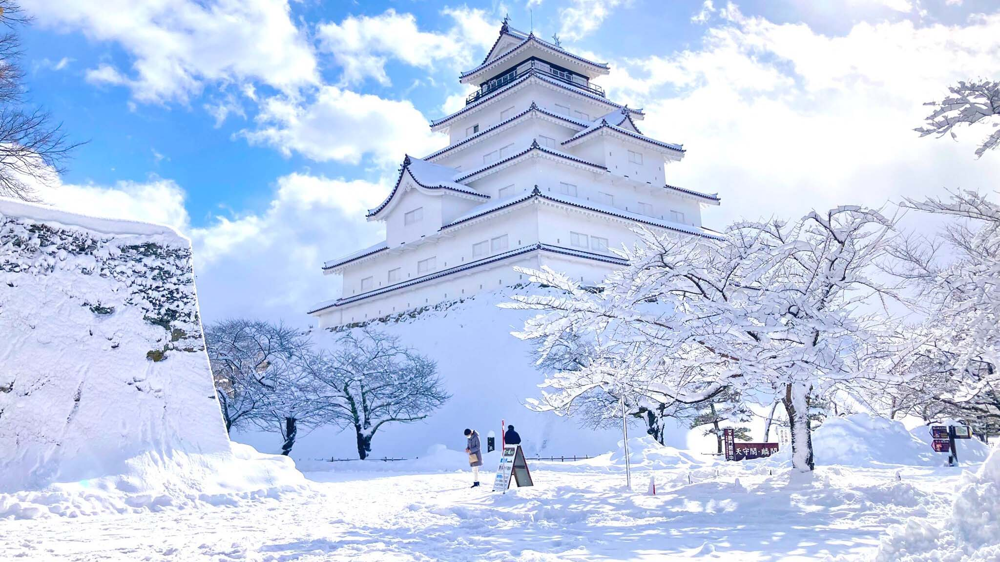
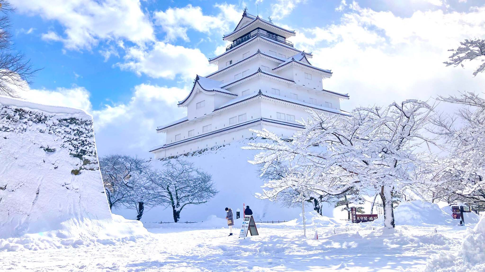

Japan
Japan is a beautiful island country with rich history that is honored throughout the world. Samurai, Shinobi, and Architecture are some of the many things Japan is known for throughout history, not to mention an incredible cuisine!
Hey! Thanks for coming to check out my travel blog. Check out my Destinations page for updates on my recent travels to Japan!
Japan is a beautiful island country with rich history that is honored throughout the world. Samurai, Shinobi, and Architecture are some of the many things Japan is known for throughout history, not to mention an incredible cuisine!
I remember growing up when friends and some adults told me that ninjas weren't real. Turns out they were super wrong (who's laughing now?!)! The ninja were employed to carry out tasks like espionage and assassinations. They would do things that, in the eyes of the samurai, were considered to be dishonorable. History Channel is a great resource to learn more about the history of the ninja!
Check out some of the music, integrated with today's modern lofi!